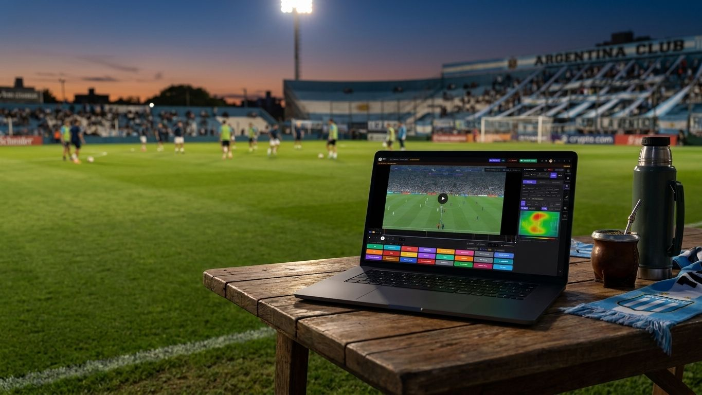

Construyamos juntos
el análisis táctico accesible.
Goal Labs ya es gratis, offline y en tu idioma para miles de técnicos y analistas. Buscamos ligas, plataformas de video, medios y consultoras que quieran ayudarnos a llevarlo más lejos.
La base ya está publicada y en uso.
-
App Free y Pro publicada, con actualizaciones activas
-
100% offline, en español, inglés e italiano
-
Planteles predefinidos para cargar categorías completas en minutos
Tres formas de ser partner de Goal Labs.
Goal Labs recién arranca. Los primeros partners no solo consiguen condiciones preferenciales — ayudan a definir hacia dónde va el producto.
Ligas y plataformas de video
Hoy importamos video y armamos planteles a mano. El objetivo es una integración oficial con plataformas como LPF Play para que el video de la liga entre directo a la app — si manejás una de estas plataformas, hablemos.
Medios y co-marketing
Contenido conjunto y presencia cruzada desde el día uno con medios o marcas que compartan nuestro público.
Reventa y afiliación
Para consultoras de análisis deportivo o academias que ya asesoran clubes: sumá Goal Labs a tu oferta con condiciones preferenciales.
Construyamos juntos
el próximo capítulo.
Si manejás una liga, una plataforma de video, un medio o una consultora de análisis deportivo, hablemos de cómo trabajar juntos.
¿Sos un club o academia que quiere usar Goal Labs? Conocé el Plan Clubes →